General Project Details
Role:
3D Character Designer, 3D Modeler, Animator, Environment Designer, Sound Designer
Team Members:
Erin Teply
Tools:
Blender, Substance Painter, Unity, Audacity
Elapsed Time:
1 month (March 2021 - April 2021)
Goal:
A short game featuring a boss battle.
Overview
The Quarrior is a short single-level boss battle game I developed with my teammate as a personal project intended to expand my skillset regarding 3D character creation. The game centers around a young miner who must defeat a cave-dwelling rock titan to free their town's mine. One skill set that I particularly wanted to work on with this project was working in the texturing program Substance Painter, which I had recently acquired and had not worked with on other projects previously. Although that was a focus, I was responsible for executing the visual direction and overseeing all aspects related to the game's aesthetics, while my teammate concentrated on the interactive experiences.
downloadTry the Game
Download the .ZIP file with the .EXE
Character Design

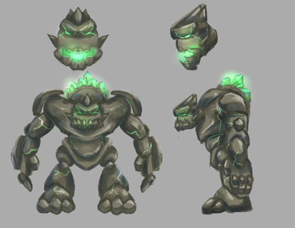
Figures 1 and 2 show the final character design sheets for the miner and the rock titan. After the team agreed on the general idea of the backstory and setting for the game, I began gathering reference images from both historical and fictional sources to inspire the design of the characters as seen in Figure 3. This mixture of references helped identify features to include in the design and find the balance between those that were aesthetically pleasing and those that were more functional to the game world.
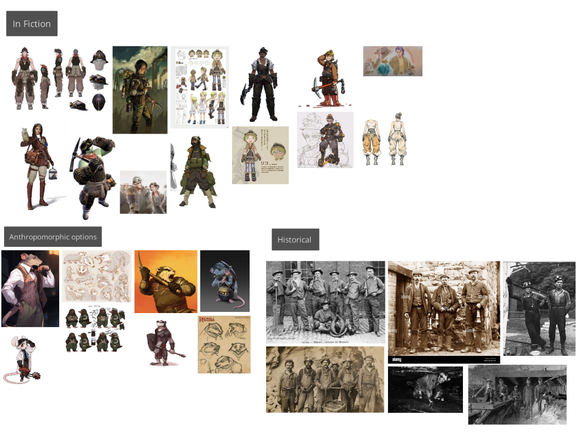
From the references, I began experimenting with the silhouettes of what a character could look like, using those silhouettes to quickly iterate on specific features as seen in the sketches in Figures 4 and 5. As gender was not an aspect of the player character that was discussed as particularly important to the game at this point, I tried to keep the features as androgenous as possible so it could be pushed more masculine or feminine later if it became important further on in the development process. A potentially anthropomorphic angle was explored, which would have pushed the game world more fantastical, as seen in references and a head sketch in Figure 4. As this project was meant to be produced on a short timeline, it was scrapped to use pre-existing animations from sources like Mixamo without complications with proportions. Once most of each respective character’s proportions and features were finalized, I also created a scaling guide, as seen in Figure 6, a couple of versions of the miner set at different scales placed next to the rock titan for comparison. This scaling guide was used in discussions with my partner to help us understand which scale would be both threatening and reasonably believable for the miner to defeat, given the mechanics we wanted to implement.
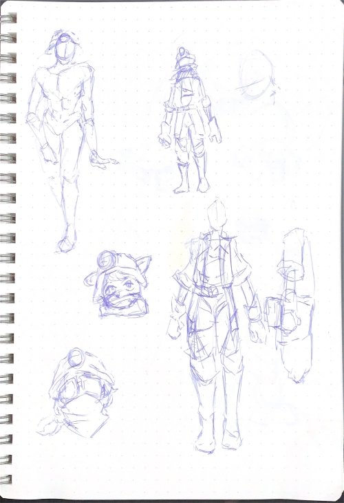
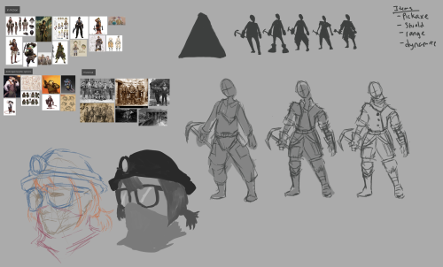
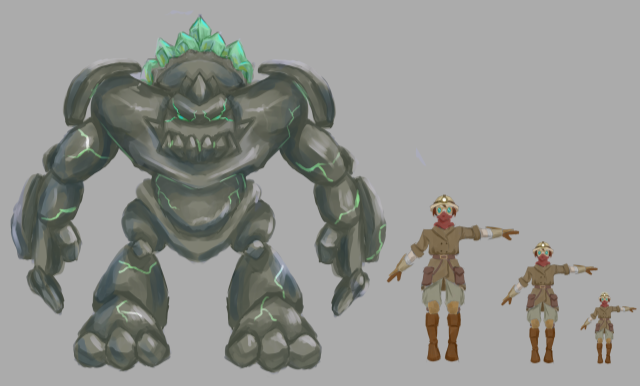
Modelling
While modelling the characters for this project, I wanted to pay more attention to details and explore aspects of the modelling process that I wasn’t able to with other projects due to time constraints. One aspect was paying attention to the polycount while modelling to improve the game's optimization and performance. I referenced the 20,000 to 60,000 triangle range recommended for high detail characters in PC/Console games made with Unity in Dmytro Tkalych’s 3D-Ace Studio blog post. The triangle counts for the final game models fell well within that range, with the miner having a triangle count of 31,208 and the rock titan having 20,328.
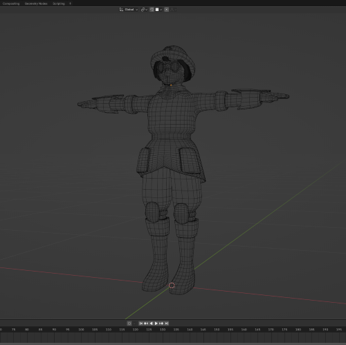
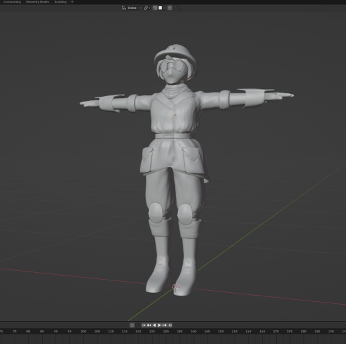
Texturing
A skillset that I wanted to improve during this project was texturing. Rather than using a procedural workflow in Blender or working directly in a drawing program like Photoshop, I decided to use and learn Substance Painter for the first time in this project. I quickly became comfortable with the program’s general workflow, from baking the high-poly mesh details onto normal maps to using generators and filters to achieve a more painterly look, as seen on the diffuse map progress image in Figure 9. Working within the workflow allowed me to get a lot of experience with other important maps (e.g., height, roughness, and ID maps) for texturing that I hadn’t touched in previous projects. Figure 10 shows the finished textures on the miner’s model in Substance Painter.
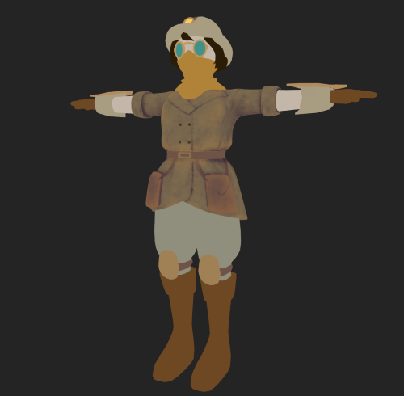
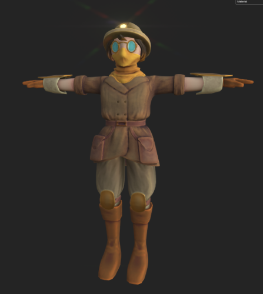
Animation
As this was designed to be a short project, the team tried to use animations from Mixamo to reduce the work of animating everything. While that worked for the humanoid form of the miner, the distorted proportions of the rock titan required custom animations. Figure 11 shows all the character animations that I created for the rock titan. Aside from just character animations, I also made most of the explosion effects for the miner’s dynamite attack.
Rendering
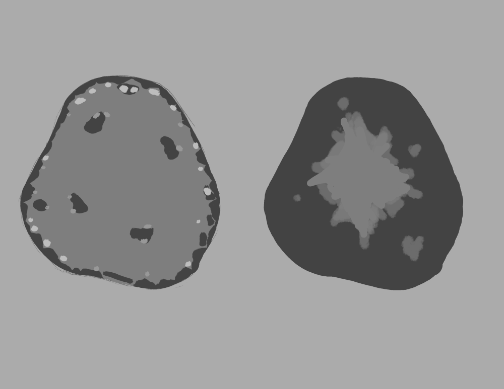
Figure 12 shows the layout of the cave that I drafted and the team agreed upon. Initially, the plan was to exclusively use free assets from non-photorealistic asset packs created by FreeStylized to maintain a consistent look. Figure 13 shows the initial attempt to create the cave using primitive shapes in Unity and stylized rock textures for the walls, as well as an assortment of assets from the previously mentioned asset packs. This attempt was unsuccessful as the flat, rigid angles created by the primitive cubes did not blend well with the softer, more organic angles found in all the other assets. Figure 14 shows the cave I modelled after the previous attempt, in which I used noise to displace a rough base mesh to emulate the curves of the other assets.
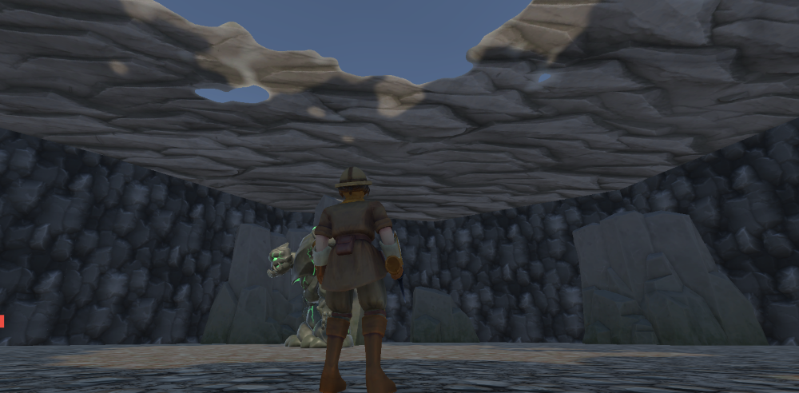
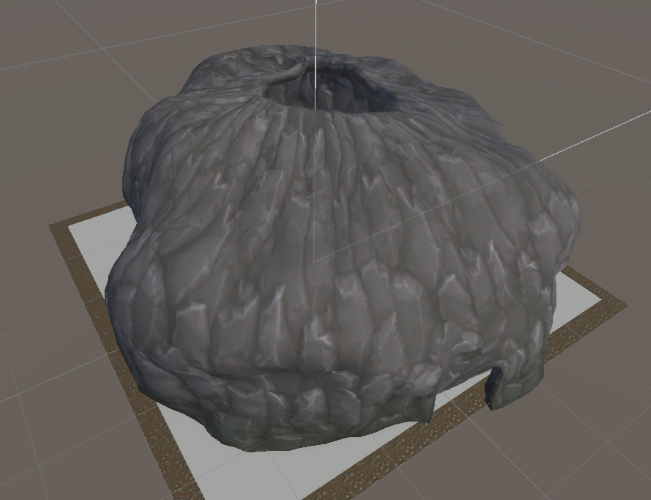
An aspect that I wanted to explore through the creation of this game was modifying and using Unity’s post-processing features. After all the environmental assets were placed appropriately on the map, I began adjusting the various overrides on a post-processing volume, including bloom, depth of field, vignetting, and tone mapping. The adjustments made a significant impact on the game’s atmosphere and enriched its experience, as can be seen in Figures 15 and 16.
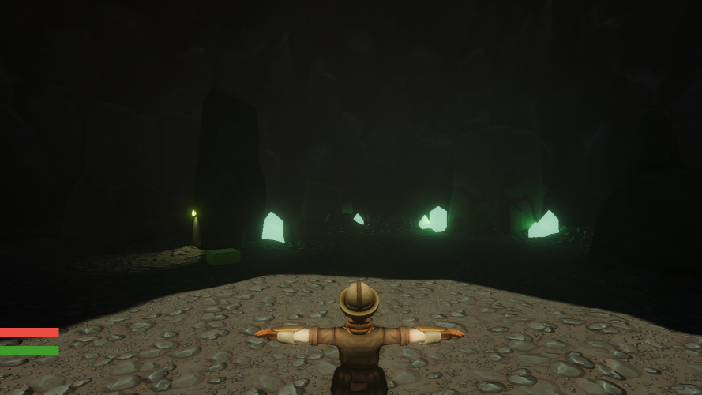
Note. If comparison between 2 images cannot be seen (e.g., pink selector is NOT in the center of the image), please REFRESH the page.
Sound Design
Another aspect I was involved in was the sound design of the game, wherein I was responsible for finding, creating, and altering sounds for character voices and explosions. Throughout most of the project’s production, my partner had implemented some placeholder sounds for the voices that are found in Nox Sound’s Voices - Essentials pack. An example from the pack can be seen in Figure 17, which was the placeholder attack sound for the rock titan. As it came from a standard voice pack, the sound was too “human” for the character. As such, I brought the placeholder sounds into Audacity to use them as a base from which I could manipulate them into their final incarnations. Through adjustments in pitch, layering, compression, and reverb, the final versions of the sound, such as the attack shown in Figure 18.
Reflection
This was a gratifying personal project where I got to explore more aspects of the 3D asset pipeline that I hadn’t been able to in previous projects. Specifically, having the time to focus on texturing and become familiar and comfortable with Substance Painter was a really valuable experience that I’m sure I will use well in the future. In addition to texturing, modelling while paying attention to polygon counts was new to me, as I hadn’t done so in past projects. It is also an aspect that I do think I still need to delve deeper into in future projects, specifically the aspect of retopology, which I hadn’t needed to do with the way I approached the modelling process in this project.
References
- Tkalych, D. (2024, January 3). Does Polygon Count Matter in 3D Modeling for Game Assets?. 3D-Ace Studio. https://3d-ace.com/blog/polygon-count-in-3d-modeling-for-game-assets/
Assets Used
- Free Stylized's Medieval Props Asset Pack: https://freestylized.com/asset_pack/medieval-props-01/
- Free Stylized's Rock Asset Pack: https://freestylized.com/asset_pack/rocks-01/
- Nox Sound's Voices-Essentials Pack: https://assetstore.unity.com/packages/audio/sound-fx/voices/voices-essentials-214441